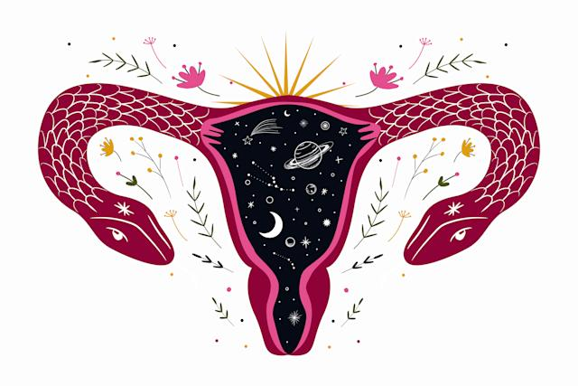

Sistema de Ajuda de Ginecologia Natural
Esse site é voltado para tratamentos naturais para as mulheres.
Clique no sistema para identificar qual o tratamento adequado ou pesquise para ver nossos artigos.
Sistema